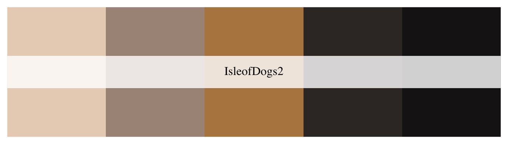
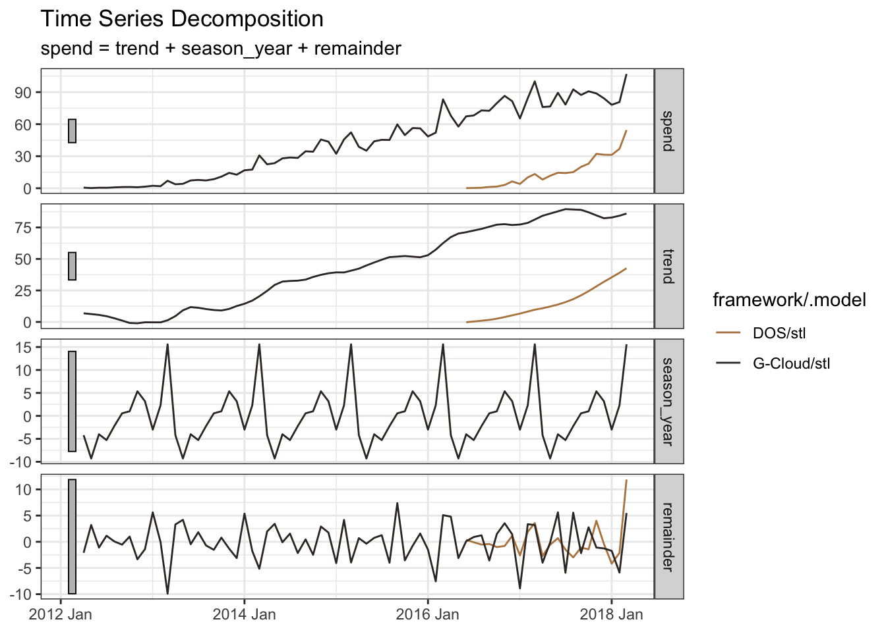

Can Ravens Forecast?
Humans have the magical ability to plan for future events, for future gain. It’s not quite a uniquely human trait. Because apparently ravens can match a four-year-old.
An abundance of data, and some very nice R packages, make our ability to plan all the more powerful.
In the Spring of 2018 I looked at sales from an historical perspective in Six Months Later.. Here I’ll use the data to model a time-series forecast for the year ahead. The techniques apply to any time series with characteristics of trend, seasonality or longer-term cycles.
Why forecast sales? Business plans require a budget, e.g. for resources, marketing and office space. A good projection of revenue provides the foundation for the budget. And, for an established business, with historical data, time-series forecasting is one way to deliver a robust projection.
Without exogenous data, the forecast assumes one continues to do what one’s doing. So, it provides a good starting-point. Then one might, for example, add assumptions about new products or services. And, if there is forward-looking data available, for example, market size projections (with past projections to train the model), then one could feed this into the forecast modelling too.
theme_set(theme_bw())
(cols <- wes_palette(name = "IsleofDogs2"))
First I’ll check the encoding of the data.
url <-
"https://www.gov.uk/government/uploads/system/uploads/attachment_data/file/"
gcloud_csv <- str_c(url, "703943/G-Cloud_spend_data_to_end_March_2018.csv")
dos_csv <- str_c(url, "703952/DOS_spend_data_to_end_March_2018.csv")
names <- c(gcloud_csv, dos_csv)
# Use walk to suppress the printing of list element numbers
walk(names, \(x) {
p <- guess_encoding(x)
print(p)
})# A tibble: 2 × 2
encoding confidence
<chr> <dbl>
1 ISO-8859-1 0.4
2 ISO-8859-2 0.22
# A tibble: 2 × 2
encoding confidence
<chr> <dbl>
1 ISO-8859-1 0.36
2 ISO-8859-2 0.24Next I’ll set up a vector of column names to apply consistently to both files, and import the data with the suggested encoding.
colnam <-
c("sector",
"lot",
"date",
"spend",
"status",
"supplier",
"customer",
"framework")
read_dm <- \(x){
read_csv(
x,
col_names = colnam,
skip = 1,
locale = locale(encoding = "ISO-8859-1"),
show_col_types = FALSE)
}
raw <- map(names, read_dm) |>
set_names(c("gcloud", "dos")) |>
bind_rows() |>
mutate(framework = if_else(is.na(framework), "DOS", framework))I’d like to create some new features: Month-end dates, something to distinguish between the two frameworks (G-Cloud or DOS). The spend has a messy format and needs a bit of cleaning too.
The lot structure for G-Cloud has evolved over time, but fortunately, there is a simple mapping, i.e. PaaS and IaaS became Cloud Hosting, SaaS became Cloud Software, and Specialist Cloud Services became Cloud Support, so I’ll standardise on the latter.
both <- raw |>
mutate(
month_end = date_parse(str_c(date, "01", sep = "-"),
format = "%b-%y-%d") |>
add_months(1) |> add_days(-1),
date = yearmonth(month_end),
framework = str_extract(framework, ".{3,7}"),
spend = str_remove(spend, coll("£")),
spend = str_replace(spend, "^\\(", "-"),
spend = parse_number(spend) / 1000000,
lot = recode(
lot,
"Software as a Service (SaaS)" = "Cloud Software",
"Infrastructure as a Service (IaaS)" = "Cloud Hosting",
"Platform as a Service (PaaS)" = "Cloud Hosting",
"Specialist Cloud Services" = "Cloud Support"
)
)The tidied data now needs to be converted to a tsibble[@tsibble], the temporal equivalent of a tibble[@tibble].
R has evolved since I first wrote this post. At that time, it was necessary to either split the data into the two frameworks (G-Cloud and DOS) and forecast them separately. Or, as I did with the three G-Cloud lots, use the purrr package to iterate through a forecast.
The tsibble package combined with the newer fable[@fable] and feasts[@feasts] packages, make this easier. One of the defining feature of the tsibble is the key. I want a model for each framework, so I’m setting this as the tsibble key (and the temporal variable as the tsibble index).
both_ts <- both |>
summarise(spend = sum(spend), .by = c(date, framework)) |>
as_tsibble(key = framework, index = date)
both_ts |>
ggplot(aes(date, spend, colour = framework)) +
geom_line(key_glyph = "timeseries") +
scale_y_continuous(labels = label_dollar(prefix = "£", suffix = "m")) +
scale_colour_manual(values = cols[c(3, 4)]) +
labs(x = NULL, y = NULL, title = "Monthly Digital Marketplace Sales")
By decomposing the historical data we can tease out the underlying trend and seasonality:
Trend: The sales for both frameworks have grown over time as more Suppliers have added their services to the Government frameworks, and more Public Sector organizations have found the benefits of purchasing Cloud services through this faster, simpler, more transparent and more competitive contracting vehicle.
Seasonality: Suppliers often manage their sales and financials based on a quarterly cycle, with a particular emphasis on a strong close to the financial year. And Government Buyers may want to make optimal use of their budgets at the close of their financial year (March 31st). Consequently, we see quarterly seasonality with an extra spike at financial year-end.
both_ts |>
model(stl = STL(spend ~ trend(window = 7) + season(window = "periodic"))) |>
components() |>
autoplot() +
scale_colour_manual(values = cols[c(3, 4)]) +
labs(x = NULL, title = "Time Series Decomposition")
I’ll use auto.arima: AutoRegressive Integrated Moving Average modelling which aims to describe the autocorrelations in the data.
By setting stepwise and approximation to FALSE, auto.arima will explore a wider range of potential models.
I’ll forecast with the default 80% and 95% prediction intervals. This means the darker-shaded 80% range should include the future sales value with an 80% probability. Likewise with a 95% probability when adding the wider and lighter-shaded area.
Use of autoplot would simplify the code, but personally I like to expose all the data, for example unpacking the prediction intervals, and have finer control over the visualisation.